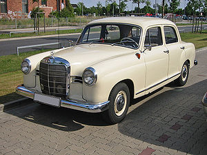
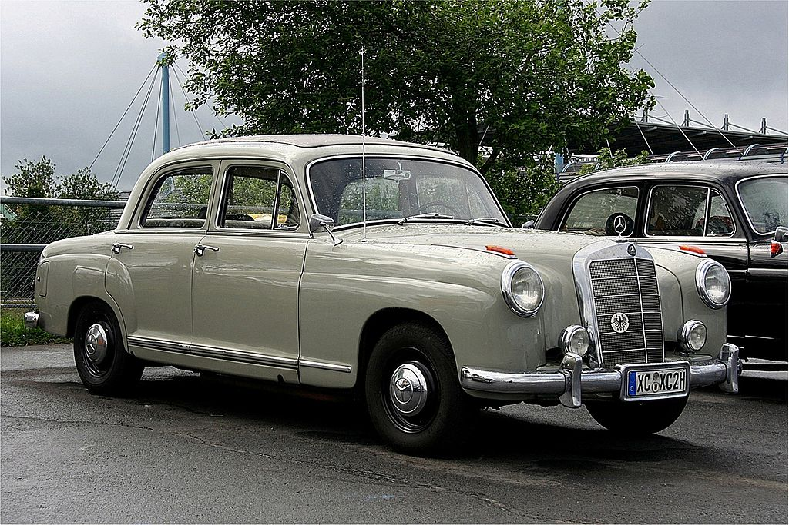
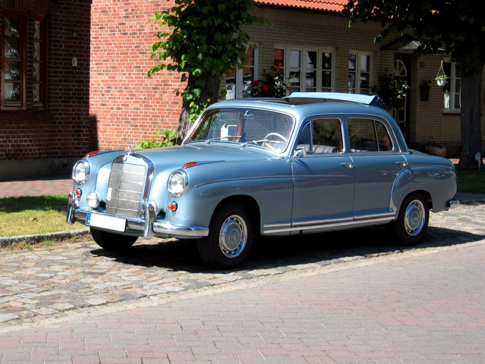

История
История марки Mercedes-Benz слагается из историй двух известных немецких автомобильных компаний — Benz & Cie. (основана Карлом Бенцем в 1883 году) и Daimler-Motoren-Gesellschaft (основана Готлибом Даймлером в 1890 году). Обе компании развивались самостоятельно до 1926 года, когда они объединились в единый концерн Daimler-Benz, впоследствии переименованный в Daimler AG.N
Benz & Cie.
1 октября 1883 Карл Бенц основал компанию «Бенц и Ко. Райнише Газмоторен-Фабрик, Манхайм» (Benz & Cie.) в форме открытого торгового общества вместе с бизнесменом Максом Каспаром Розе и коммерсантом Фридрихом Вильгельмом Эсслингером. В 1886 году предприятием была создана первая трёхколёсная самоходная повозка с бензиновым двигателем. В этом же году 29 января её создатель — Карл Бенц — получил патент DRP No. 37435 на это изобретение). Впоследствии трёхколёсный автомобиль был запущен в серийное производство.

В 1893 году Карл Бенц получил патент DRP No. 73515 для двойного стержня управления и инициировал выпуск четырёхколёсных автомобилей «Виктория» с двигателем мощностью 3 л. с.[9], скорость которых составляла 17-20 км/ч. За первый год было продано 45 таких автомобилей. В 1894 году компания начала выпуск автомобилей модели «Velo», которые участвовали в первых автомобильных гонках Париж — Руан. В 1895 году был создан первый грузовик, а также первые в истории автобусы[10].
Через год, в 1896 году, фирма Benz & Cie. разработала первый цилиндр для двигателей, которые Бенц назвал «contra engine», поскольку цилиндры были установлены противоположно друг другу[11].
В 1901 году, вскоре после выпуска Даймлером новой модели «Mercedes 35 PS», становится понятно, насколько фирма отстаёт от прогресса. С целью улучшения положения акционеры приглашают в компанию французского инженера Мариуса Барбару[12]. Из-за технических разногласий Карл Бенц покинул собственную компанию. Вскоре стало ясно, что французский конструктор не оправдывает возложенных на него надежд. Следуя логике, что немецкие автомобили должны делаться немцами, в фирму на должность главного инженера приглашён Фриц Эрле. Эта идея также оказалось неудачной. Только с приходом в компанию талантливого инженера Ганса Нибеля дела постепенно начали идти в гору. В 1909 году, создав целый ряд успешных легковых автомобилей, фирма построила самый известный гоночный автомобиль того времени «Блитцен Бенц» с двигателем мощностью в 200 лошадиных сил и рабочим объёмом 21 594 см3[13].
В послевоенные годы было создано множество новых моделей, большинство из которых с успехом выпускались до середины двадцатых годов. Всего с момента начала производства в 1886 году и до объединения с «Даймлер-Моторен-Гезелльшафт» в 1926 году, фирма «Бенц и Ко.» произвела 47 555 транспортных средств, включая легковые автомобили, грузовики и омнибусы.
Daimler-Motoren-Gesellschaft
В декабре 1883 года Готлиб Даймлер защитил собственный «газовый двигатель с зажиганием от горячей трубки» патентом DRP No. 28022. Также он получил патент DRP No. 28243 на систему «регулирования оборотов двигателя с помощью выпускного клапана». Эти два патента послужили основой для первого быстроходного двигателя внутреннего сгорания. 29 августа 1885 года Готлиб зарегистрировал Daimler Reitwagen («верховая повозка») с «газовым или бензиновым двигателем», получив патент DRP No. 36423. В 1889 году он представил новый двухцилиндровый V-образный двигатель, развивающий мощность в 1,5 л. с. при 600 об/мин. Через год, весной 1890 года, Вильгельм Майбах сконструировал первый 4-цилиндровый, четырёхтактный двигатель. Автомобиль, оснащённый данным силовым агрегатом, обладал весом в 153 кг и развивал мощность в 5 л. с. при 620 оборотах в минуту.
28 ноября 1890 года Готлиб Даймлер совместно со своими партнёрами, Вильгельмом Майбахом и Максом Дуттенхофером (нем. Max Duttenhofer), основали компанию «Даймлер-Моторен-Гезелльшафт» в районе Бад-Канштат (Штутгарт), решив выпускать четырёхколёсный автомобиль, созданный ими четырьмя годами ранее. 18 марта 1895 года компания Daimler-Motoren-Gesellschaft доставила в Кронштадт первый в мире грузовик с двухцилиндровым двигателем, мощностью 4 л. с. Через два года летом DMG представило «Phönix» — первый тип автомобилей с двигателями в передней части.
После ряда не очень удачных попыток, которые всё же нашли своих восторженных покупателей, конструктору В. Майбаху в 1901 году удалось создать успешный образец — Mercedes 35 PS. По настоянию консула Австро-Венгерской империи в Ницце и по совместительству главы представительства «Даймлер» во Франции Эмиля Еллинека новый автомобиль назван в честь Девы Марии Милосердной (фр. Maria de las Mercedes, от латинского «merces» — «дары»), в честь которой также названы все его дети, в числе которых небезызвестная дочь консула Мерседес, и имущество (яхты, дома, отель и казино).
Первый «Мерседес-35PS» обладал четырёхцилиндровым двигателем рабочим объёмом 5913 см3, классическим расположением основных агрегатов и стильной (по тем временам) внешностью. Через год свет увидел более совершенную конструкцию под названием «Мерседес-Симплекс». Кроме того, расширился модельный ряд. Самые известные представители этой серии именовались как «Mercedes-40/45PS» и «Mercedes-65PS», и оснащались двигателями рабочим объёмом в 6785 см3 и 9235 см3 соответственно, позволявшие развивать скорость до 90 км/ч.
До Первой мировой войны компания «Даймлер-Моторен-Гезелльшафт» успела выпустить широкий модельный ряд собственных автомобилей с различными двигателями (от 1568 см3 до 9575 см3), рассчитанных на широкий круг потребителей, включавший роскошные, практически бесшумные автомобили, оснащённые двигателями с бесклапанным газораспределением, произведённые по патенту американской компании «Найт».
Сразу же после войны Пауль Даймлер, сын Готлиба Даймлера, начал проводить эксперименты с компрессором, позволяющим в полтора раза повысить мощность двигателя. Занявший должность главного инженера в 1923 году Фердинанд Порше довёл эксперименты до логического завершения, создав в 1924 году один из самых выдающихся автомобилей мира — «Mercedes-24/100/140PS» с новым шасси и шестицилиндровым компрессорным двигателем рабочим объёмом 6240 см3, развивающим мощность в 100—140 лошадиных сил.
К 1926 году компания «Даймлер-Моторен-Гезелльшафт» произвела на всех своих заводах в общей сложности 147 961 автомобиль, причём максимальная производительность была достигнута в 1918 году.
Объединение конкурентов
Первая мировая война, обрушение курса валюты, а также проникновение на внутренний рынок Германии зарубежных производителей, таких как Ford Motor Company, привели к серьёзному структурному кризису в немецкой автомобильной промышленности. 28 июня 1926 года две конкурирующие фирмы решили объединиться, образовав новый концерн Daimler-Benz, который смог эффективно использовать опыт и знания конструкторов обеих компаний. Руководителем нового предприятия был назначен Фердинанд Порше. Он полностью обновил производственную программу, взяв за основу последние модели Daimler-Motoren-Gesellschaft, выпускавшиеся теперь под маркой Mercedes-Benz. Первой новой разработкой Порше в 1926 году стала компрессорная серия, включавшая модель Mercedes 24/100/140 PS с шестицилиндровым мотором рабочим объёмом 6240 см3. За большую мощность и скорость (до 145 км/ч) её прозвали «смертельной ловушкой». Она стала базовой для более известной серии S, состоявшей из моделей S (Sport), SS (Supersport), SSK (Supersport Kurz — «суперспорт короткий») и SSKL (Supersport Kurz leicht — «суперспорт короткий лёгкий»).
В 1928 году Порше покинул Daimler-Benz, а его место занял Ганс Нибель (нем. Hans Nibel)[21]. Под его руководством выпускались легковые автомобили Mannheim 370 (англ.) с шестицилиндровым мотором рабочим объёмом 3,7 л. и Nürburg 500 (англ.) с восьмицилиндровым 4,9-литровым агрегатом, базировавшимися на последних разработках Порше.
В 1930 году появился «Большой Мерседес» (нем. Großer Mercedes) или Mercedes-Benz 770 (W07) с восьмицилиндровым 200-сильным двигателем, рабочим объёмом в 7655 см3 с нагнетателем. В 1931 году фирма дебютировала в секторе малолитражных автомобилей, где её представлял весьма успешный Mercedes 170 (англ.) с шестицилиндровым мотором, рабочим объёмом в 1692 см3 и независимой подвеской передних колёс.
В 1933 году появились легковой Mercedes-Benz 200 и спортивный Mercedes-Benz 380 (англ.) с 2,0- и 3,8-литровыми моторами. Последний из них был оснащён нагнетателем и имел мощность в 140 лошадиных сил. На базе спортивной модели в 1934 году создали Mercedes-Benz 500K с 5-литровым двигателем, ставший через два года основой для более известного большого компрессорного автомобиля Mercedes-Benz 540K (англ.). В 1934—1936 годах фирма выпустила лёгкий Mercedes-Benz 130 (англ.) с четырёхцилиндровым 26-сильным двигателем заднего расположения, рабочим объёмом всего 1308 см3, за которым последовали родстер 150 (англ.) и седан 170H (англ.).
Под техническим руководством главного конструктора Макса Зайлера, сменившего Нибеля в 1935 году, созданы популярная недорогая модель 170V с четрёхцилиндровым мотором рабочим объёмом 1697 см3, первый в мире серийный легковой автомобиль с дизельным двигателем Mercedes-Benz 260 D (1936 год), а также новый «Большой» Mercedes-Benz 770 (W150) (1938 год) с рамой из балок овального сечения и задней пружинной подвеской, служивший нацистским лидерам.
Вторая мировая война
Во время Второй мировой войны концерн Daimler-Benz выпускал как грузовики, так и легковые автомобили различных классов. Однако двухнедельная воздушная бомбардировка англо-американскими ВВС в сентябре 1944-го года превратили Daimler-Benz Aktiengesellschaft в руины. Разрушение крупного концерна оценивались по-разному: главный цех в Штутгарте был разрушен на 70 %, двигательный и кузовной цеха в Зинделфингене — 85 %, цех грузовиков в Гаггенау был полностью уничтожен. Бывшей фабрике Benz & Cie. в Маннгейме повезло больше всех — всего 20 % разрушения, а завод дизельных двигателей Berlin-Marienfelde, приобретённый в 1902, полностью сравняли с землёй. Когда оценки разрушения были готовы к январю 1945-го года, совет директоров постановил, что «Daimler-Benz физически больше не существует».
Послевоенный период
На послевоенное восстановление разрушенных заводов потребовалось время, поэтому автомобильное производство было начато только в июне 1946 года. Для разработки новых автомобилей не было ни технической базы, ни средств, поэтому первым послевоенным автомобилем стал седан W136 — «170V». Хотя конструкция была разработана ещё в середине 1930-х годов, малолитражный автомобиль с мотором всего 38 лошадиных сил стал началом новой истории марки. Уже с мая 1949 года была проведена крупная модернизация. Рабочий объём двигателя увеличен на 70 см3, (соответственно мощность выросла до 52 л. с.; модель «170S»), появились варианты в кузовах кабриолет и универсал (т. н. кабриолеты «А» и «B») и главное — модели с дизельными двигателями «170D».
К началу 1950-х годов концерн Daimler-Benz строил крупные планы на будущее, однако запуск нового поколения автомобилей требовал дальнейшего развития производственной базы. Поэтому в начале 1950-х годов, несмотря на появление новой роскошной серии «300», продолжался выпуск моделей с морально устаревшей конструкцией. Продолжалась постоянная модернизация и запуск новых моделей. Так в январе 1952 года появилась модель с увеличенным кузовом, которая получила номер W191[en][18]. Но ещё до этого, в марте 1951 года, на автомобиль поставили шестицилиндровый двигатель с мощностью 80 л. с. вместо 4-х цилиндрового. Вместе с новым дизайном экстерьера (например, расположение передних фонарей в крылья) автомобиль W187[en] получил новое имя «220» и занял средний сегмент между «170»-ми и «300»-ми. Он предлагался в трёх кузовах (седан и кабриолеты «А» и «B»).
Всего за девять лет (выпуск завершился в сентябре 1955 года) построено соответственно 151 042 и 18 514 автомобилей «170» и «220». Благодаря им компания смогла создать прочный фундамент, на котором она станет ведущим автомобильным производителем в Западной Европе.
«Аденауэры»
После успешного восстановления заводов и производства своих малолитражных автомобилей, к концу 1940-х годов компания вновь приступила к восстановлению своего довоенного бренда как производителя роскошных автомобилей. Учитывая современные прорывы в моде автомобилестроения, в ноябре 1951 года на Парижском автосалоне появился новый представительский лимузин W186[en] «300». Автомобиль, хоть и был построен в классической компоновке (отдельная рама и кузов), однако оснащался мощным 6-цилиндровым двигателем рабочим объёмом в 2996 см3 с верхним распределительным валом.
Новая модель производилась в двух кузовах — седан и четырёхдверный кабриолет «D» и имела огромный успех среди крупных бизнесменов, знаменитостей и политиков. Именно последняя категория и дала автомобилю неофициальное название в честь первого федерального канцлера ФРГ, Конрада Аденауэра, который имел личный автомобиль и высоко его оценил. Так как сборка автомобиля проводилась вручную, интерьеры делались под покупателей и оснащались радио, телефоном и многими другими новшествами.
Ручная сборка автомобилей позволяла проводить непрерывные модернизации, поэтому в конце 1954 года появилась серия W186 «300b», которая получила новые тормозные барабаны и передние форточки. Год спустя её заменила «300с», оснащённая автоматической коробкой передач фирмы Borg-Warner. Но самый большой шаг вперёд был сделан в середине 1950-х годов, когда фирмой Bosch было сделано изобретение системы впрыска топлива. Ей с 1955 года оснащали серию W188 «300Sc».
В январе 1952 года появилась ещё одна серия представительского класса W188[en] — «300S», которая выпускалась в нескольких кузовных модификациях: купе, кабриолет «А» и двухместный родстер. Степень сжатия двигателя увеличена до 7,8:1, а мощность составила 150 л. с. Если сборка больших «аденауэров» шла относительно быстро (около тысячи в год, учитывая совокупные возможности заводов марки), то средний выпуск автомобилей «300S» был не более ста штук в год.
Однако, если спрос на крупные «аденауэры» продолжался, то выпуск малосерийных «300S» стал непрактичным после появления родстеров SL и аналогичных двухдверных понтонных моделей в середине 1950-х годов (см. ниже). Дальнейшая сборка морально устаревших автомобилей оказалась для фирмы большим бременем, поэтому в 1958 году выпуск всех трёх кузовов W188 был прекращён после выпуска всего лишь 760 автомобилей[27].
Что же касается флагманских седанов и кабриолетов «D», то в августе 1957 года была проведена основательная модернизация автомобиля, который стал именоваться как W189[en] — «300D». Главное внешнее отличие было в хвостовой части кузова, которая приобрела форму понтонного седана. Аналогично изменила форму и задняя часть крыши с увеличенным хвостовым стеклом. Боковое остекление также получило очень удобную для летнего времени возможность убрать центральную стойку. Для успешного проникновения на рынок США автомобили оснащали кондиционерами и гидроусилителями руля, а шины окрашивали в белый цвет. Двигатель нового «аденауэра» оснастили системой впрыска топлива, благодаря чему его мощность равнялась 180 л. с., а максимальная скорость тяжёлого автомобиля достигала 165 км/ч.
Сборка «аденауэров» продолжалась до марта 1962 года. Всего за время производства было собрано 8288 автомобилей серии W186 и 3142 серии W189. Благодаря этому модельному ряду бренд Mercedes-Benz полностью восстановил свою довоенную репутацию производителя роскошных автомобилей.
«Аденауэры»:


Понтоны
В начале 1950-х годов у компании наконец появились ресурсы и персонал, которые могли реализовать задуманные изменения. Как уже отмечалось, модели «170» и «200», к началу 1950-х уже полностью устарели, а «300»-е могла себе позволить лишь элита того времени. Марке требовалась унифицированная серия автомобилей, которая была бы современной, надёжной, но при этом относительно недорогой и простой в обслуживании.
Выход был очевиден — кузов типа монокок, но тут Mercedes-Benz сохранил классические линии колёсных арок и тем самым ввёл в автомобильную терминологию дизайн понтонного кузова. Таким был новый автомобиль W120 «180», впервые показанный в июле 1953 года. Выпуск продолжался вплоть до начала 1960-х годов, на протяжении которого было разработано множество моделей и модернизаций. Так, в феврале 1954 года появился дизельный вариант «180D», а в марте 1956 — более мощный и комфортабельный W121 «190», к которому также появилась дизельная модификация «190D» в августе 1958 года. Но самой значимой моделью был спортивный родстер «190SL», построенный на общем с W121 кузове, несмотря на существенные внешние отличия (см. описание ниже).
Первые шестицилиндровые, т. н. «крупные понтоны» появились в июне 1954 года с моделью W180 «220a», на который устанавливали двигатель мощностью в 89 л. с. Как и свои младшие братья, автомобили перенесли целый ряд модификаций. С марта 1956 года появилась аналогичная «190»-му флагманская серия «220S», которая выпускалась, помимо седана, в кузовах двухдверного купе и кабриолета с мощностью двигателя в 105 л. с. Старые модели «220а» теперь стали именоваться как «219» под новым номером кузова W105. В октябре 1958 года были представлены модели, оснащённые системой впрыска топлива, и носившие кодовое наименование «220SE» (Е — Einspritzmotor) для седанов, купе и кабриолетов, которые теперь стали именоваться как W128.
Выпуск крупных понтонов 220-й серии продолжался до сентября 1959 года (в кузове седан) и ноября 1960 года (купе и кабриолеты). Всего было собрано, соответственно, 111 035 и 5371 таких автомобилей. Младшие понтоны выпускались дольше — до октября 1962 года. Производство составило 442 963 седанов W120 и W121, а также 25 881 родстеров «190SL». Итого 585 250 автомобилей — масштаб, который позволил прославить марку на весь мир. Только официально автомобили экспортировались в 136 стран. За время выпуска была создана прочная база для производства будущих моделей, и уже в 1960 году по анализу концерна Daimler-Benz сборка одного автомобиля в Зиндельфингене занимала всего 25 часов. Но автомобильный мир в конце 1950 — начале 1960-х годов переживал бурные изменения, и, чтобы сохранять конкурентоспособность в неравном бою с американскими производителями, требовались новые поколения автомобилей.
Понтоны:

Новая эпоха
Модель «600» завершила обновление всего модельного ряда компании. Годы выпуска этих автомобилей как раз совпали с расцветом ФРГ как новой экономической силы Западной Европы, что говорит и о масштабах производства и об экспортном успехе автомобилей. К середине 1960-х Mercedes-Benz утвердился в лидерах немецкой автопромышленности. Разумеется, плавниковая эпоха не завершилась с запуском 600-го, но возможность унифицировать модельный ряд позволила сэкономить огромное количество материальных и людских ресурсов.
Понтонами и SL Mercedes сумел за 10 лет превратиться из фирмы, находившейся до войны на 170-м месте по выпуску машин, в производителя лучших европейских автомобилей. Модели экспортировались во многие страны мира и закупались как знаменитостями, так и политиками. Но к концу 1950-х образ современных автомобилей, как и западного общества, резко менялся, и Mercedes-Benz стал авангардом в этой эпохе. В 1959 году пошло в серию новое семейство представительского класса W111, получившее элегантные несущие кузова с вертикальными блоками фар, огромный багажный отсек и независимую подвеску всех колёс (модели 220, 220S, 220SE, 230S, 250SE, 280SE и 280SE 3.5). Они продемонстрировали высочайший технический уровень автомобилей этой марки. Главным символом новой эпохи стал квадратный кузов, но с чётким американским влиянием в виде «плавников» на задних крыльях. У автомобиля также имелись версии купе и кабриолет. Мода на плавники также перешла на автомобили среднего класса W110. В 1961 году Mercedes-Benz выпустил роскошную версию, основанную на 111-м 300SE W112, также имевшую версии купе и кабриолета.
Но мода на плавники ушла так же быстро, как и пришла, а компания продолжала вводить новые и более роскошные модели. В 1963 году появились две новые модели. Первой стала SL «Пагода» с уникальной крышей (её средняя часть была ниже боковин). Автомобиль выпускался в трёх сериях: 230SL, 250SL и 280SL. А в конце 1963-го появился лимузин Mercedes-Benz W100 600. Автомобиль имел 6,3-литровый двигатель V8 мощностью 250 л. с., автоматическую 4-ступенчатую коробку передач и пневматическую подвеску колёс. Главное, что у автомобиля почти не было конкурентов, и не только в престиже — несмотря на огромные размеры он мог развивать максимальную скорость до 205 км/ч. Выпускались также удлинённые версии Pullman (включая шестидверные варианты) и полукабриолеты — ландоле.